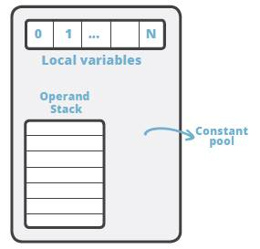
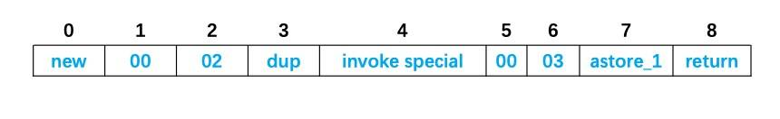
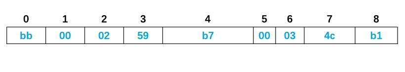
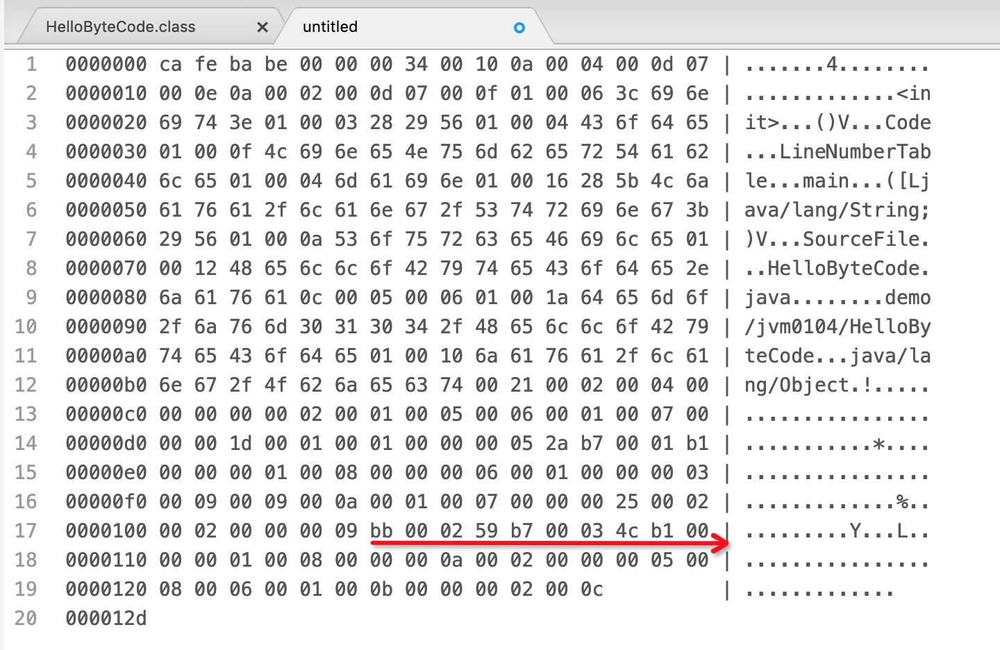
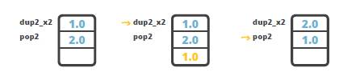
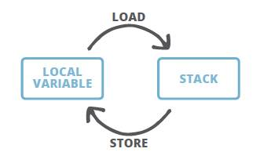
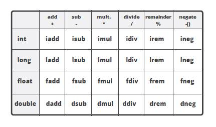
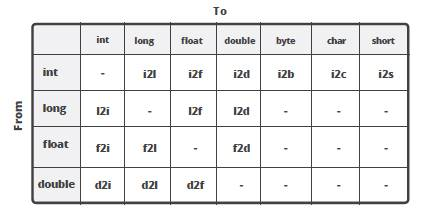

- 01 阅读此专栏的正确姿势.md.html
- 02 环境准备：千里之行，始于足下.md.html
- 03 常用性能指标：没有量化，就没有改进.md.html
- 04 JVM 基础知识：不积跬步，无以至千里.md.html
- 05 Java 字节码技术：不积细流，无以成江河.md.html
- 06 Java 类加载器：山不辞土，故能成其高.md.html
- 07 Java 内存模型：海不辞水，故能成其深.md.html
- 08 JVM 启动参数详解：博观而约取、厚积而薄发.md.html
- 09 JDK 内置命令行工具：工欲善其事，必先利其器.md.html
- 10 JDK 内置图形界面工具：海阔凭鱼跃，天高任鸟飞.md.html
- 11 JDWP 简介：十步杀一人，千里不留行.md.html
- 12 JMX 与相关工具：山高月小，水落石出.md.html
- 13 常见的 GC 算法（GC 的背景与原理）.md.html
- 14 常见的 GC 算法（ParallelCMSG1）.md.html
- 15 Java11 ZGC 和 Java12 Shenandoah 介绍：苟日新、日日新、又日新.md.html
- 16 Oracle GraalVM 介绍：会当凌绝顶、一览众山小.md.html
- 17 GC 日志解读与分析（基础配置）.md.html
- 18 GC 日志解读与分析（实例分析上篇）.md.html
- 19 GC 日志解读与分析（实例分析中篇）.md.html
- 20 GC 日志解读与分析（实例分析下篇）.md.html
- 21 GC 日志解读与分析（番外篇可视化工具）.md.html
- 22 JVM 的线程堆栈等数据分析：操千曲而后晓声、观千剑而后识器.md.html
- 23 内存分析与相关工具上篇（内存布局与分析工具）.md.html
- 24 内存分析与相关工具下篇（常见问题分析）.md.html
- 25 FastThread 相关的工具介绍：欲穷千里目，更上一层楼.md.html
- 26 面临复杂问题时的几个高级工具：它山之石，可以攻玉.md.html
- 27 JVM 问题排查分析上篇（调优经验）.md.html
- 28 JVM 问题排查分析下篇（案例实战）.md.html
- 29 GC 疑难情况问题排查与分析（上篇）.md.html
- 30 GC 疑难情况问题排查与分析（下篇）.md.html
- 31 JVM 相关的常见面试问题汇总：运筹策帷帐之中，决胜于千里之外.md.html
- 32 应对容器时代面临的挑战：长风破浪会有时、直挂云帆济沧海.md.html
05 Java 字节码技术：不积细流，无以成江河
Java 中的字节码，英文名为 bytecode, 是 Java 代码编译后的中间代码格式。JVM 需要读取并解析字节码才能执行相应的任务。
从技术人员的角度看，Java 字节码是 JVM 的指令集。JVM 加载字节码格式的 class 文件，校验之后通过 JIT 编译器转换为本地机器代码执行。 简单说字节码就是我们编写的 Java 应用程序大厦的每一块砖，如果没有字节码的支撑，大家编写的代码也就没有了用武之地，无法运行。也可以说，Java 字节码就是 JVM 执行的指令格式。
那么我们为什么需要掌握它呢？
不管用什么编程语言，对于卓越而有追求的程序员，都能深入去探索一些技术细节，在需要的时候，可以在代码被执行前解读和理解中间形式的代码。对于 Java 来说，中间代码格式就是 Java 字节码。 了解字节码及其工作原理，对于编写高性能代码至关重要，对于深入分析和排查问题也有一定作用，所以我们要想深入了解 JVM 来说，了解字节码也是夯实基础的一项基本功。同时对于我们开发人员来时，不了解平台的底层原理和实现细节，想要职业进阶绝对不是长久之计，毕竟我们都希望成为更好的程序员， 对吧？
任何有实际经验的开发者都知道，业务系统总不可能没有 BUG，了解字节码以及 Java 编译器会生成什么样的字节码，才能说具备扎实的 JVM 功底，会在排查问题和分析错误时非常有用，也能更好地解决问题。
而对于工具领域和程序分析来说, 字节码就是必不可少的基础知识了，通过修改字节码来调整程序的行为是司空见惯的事情。想了解分析器(Profiler)，Mock 框架，AOP 等工具和技术这一类工具，则必须完全了解 Java 字节码。
4.1 Java 字节码简介
有一件有趣的事情，就如名称所示, Java bytecode 由单字节(byte)的指令组成，理论上最多支持 256 个操作码(opcode)。实际上 Java 只使用了 200 左右的操作码， 还有一些操作码则保留给调试操作。
操作码， 下面称为 指令, 主要由类型前缀和操作名称两部分组成。
例如，'
i' 前缀代表 ‘integer’，所以，'iadd' 很容易理解, 表示对整数执行加法运算。
根据指令的性质，主要分为四个大类：
- 栈操作指令，包括与局部变量交互的指令
- 程序流程控制指令
- 对象操作指令，包括方法调用指令
- 算术运算以及类型转换指令
此外还有一些执行专门任务的指令，比如同步(synchronization)指令，以及抛出异常相关的指令等等。下文会对这些指令进行详细的讲解。
4.2 获取字节码清单
可以用 javap 工具来获取 class 文件中的指令清单。 javap 是标准 JDK 内置的一款工具, 专门用于反编译 class 文件。
让我们从头开始, 先创建一个简单的类，后面再慢慢扩充。
package demo.jvm0104;
public class HelloByteCode {
public static void main(String[] args) {
HelloByteCode obj = new HelloByteCode();
}
}
代码很简单, main 方法中 new 了一个对象而已。然后我们编译这个类:
javac demo/jvm0104/HelloByteCode.java
使用 javac 编译 ，或者在 IDEA 或者 Eclipse 等集成开发工具自动编译，基本上是等效的。只要能找到对应的 class 即可。
javac 不指定
-d参数编译后生成的.class文件默认和源代码在同一个目录。注意:
javac工具默认开启了优化功能, 生成的字节码中没有局部变量表(LocalVariableTable)，相当于局部变量名称被擦除。如果需要这些调试信息, 在编译时请加上-g选项。有兴趣的同学可以试试两种方式的区别，并对比结果。JDK 自带工具的详细用法, 请使用:
javac -help或者javap -help来查看; 其他类似。
然后使用 javap 工具来执行反编译, 获取字节码清单：
javap -c demo.jvm0104.HelloByteCode
# 或者:
javap -c demo/jvm0104/HelloByteCode
javap -c demo/jvm0104/HelloByteCode.class
javap 还是比较聪明的, 使用包名或者相对路径都可以反编译成功, 反编译后的结果如下所示：
Compiled from "HelloByteCode.java"
public class demo.jvm0104.HelloByteCode {
public demo.jvm0104.HelloByteCode();
Code:
0: aload_0
1: invokespecial #1 // Method java/lang/Object."<init>":()V
4: return
public static void main(java.lang.String[]);
Code:
0: new #2 // class demo/jvm0104/HelloByteCode
3: dup
4: invokespecial #3 // Method "<init>":()V
7: astore_1
8: return
}
OK，我们成功获取到了字节码清单, 下面进行简单的解读。
4.3 解读字节码清单
可以看到，反编译后的代码清单中, 有一个默认的构造函数 public demo.jvm0104.HelloByteCode(), 以及 main 方法。
刚学 Java 时我们就知道， 如果不定义任何构造函数，就会有一个默认的无参构造函数，这里再次验证了这个知识点。好吧，这比较容易理解！我们通过查看编译后的 class 文件证实了其中存在默认构造函数，所以这是 Java 编译器生成的， 而不是运行时JVM自动生成的。
自动生成的构造函数，其方法体应该是空的，但这里看到里面有一些指令。为什么呢？
再次回顾 Java 知识, 每个构造函数中都会先调用 super 类的构造函数对吧？ 但这不是 JVM 自动执行的, 而是由程序指令控制，所以默认构造函数中也就有一些字节码指令来干这个事情。
基本上，这几条指令就是执行 super() 调用；
public demo.jvm0104.HelloByteCode();
Code:
0: aload_0
1: invokespecial #1 // Method java/lang/Object."<init>":()V
4: return
至于其中解析的 java/lang/Object 不用说, 默认继承了 Object 类。这里再次验证了这个知识点，而且这是在编译期间就确定了的。
继续往下看 c,
public static void main(java.lang.String[]);
Code:
0: new #2 // class demo/jvm0104/HelloByteCode
3: dup
4: invokespecial #3 // Method "<init>":()V
7: astore_1
8: return
main 方法中创建了该类的一个实例， 然后就 return 了， 关于里面的几个指令， 稍后讲解。
4.4 查看 class 文件中的常量池信息
常量池 大家应该都听说过, 英文是 Constant pool。这里做一个强调: 大多数时候指的是 运行时常量池。但运行时常量池里面的常量是从哪里来的呢? 主要就是由 class 文件中的 常量池结构体 组成的。
要查看常量池信息, 我们得加一点魔法参数:
javap -c -verbose demo.jvm0104.HelloByteCode
在反编译 class 时，指定 -verbose 选项, 则会 输出附加信息。
结果如下所示:
Classfile /XXXXXXX/demo/jvm0104/HelloByteCode.class
Last modified 2019-11-28; size 301 bytes
MD5 checksum 542cb70faf8b2b512a023e1a8e6c1308
Compiled from "HelloByteCode.java"
public class demo.jvm0104.HelloByteCode
minor version: 0
major version: 52
flags: ACC_PUBLIC, ACC_SUPER
Constant pool:
#1 = Methodref #4.#13 // java/lang/Object."<init>":()V
#2 = Class #14 // demo/jvm0104/HelloByteCode
#3 = Methodref #2.#13 // demo/jvm0104/HelloByteCode."<init>":()V
#4 = Class #15 // java/lang/Object
#5 = Utf8 <init>
#6 = Utf8 ()V
#7 = Utf8 Code
#8 = Utf8 LineNumberTable
#9 = Utf8 main
#10 = Utf8 ([Ljava/lang/String;)V
#11 = Utf8 SourceFile
#12 = Utf8 HelloByteCode.java
#13 = NameAndType #5:#6 // "<init>":()V
#14 = Utf8 demo/jvm0104/HelloByteCode
#15 = Utf8 java/lang/Object
{
public demo.jvm0104.HelloByteCode();
descriptor: ()V
flags: ACC_PUBLIC
Code:
stack=1, locals=1, args_size=1
0: aload_0
1: invokespecial #1 // Method java/lang/Object."<init>":()V
4: return
LineNumberTable:
line 3: 0
public static void main(java.lang.String[]);
descriptor: ([Ljava/lang/String;)V
flags: ACC_PUBLIC, ACC_STATIC
Code:
stack=2, locals=2, args_size=1
0: new #2 // class demo/jvm0104/HelloByteCode
3: dup
4: invokespecial #3 // Method "<init>":()V
7: astore_1
8: return
LineNumberTable:
line 5: 0
line 6: 8
}
SourceFile: "HelloByteCode.java"
其中显示了很多关于 class 文件信息： 编译时间， MD5 校验和， 从哪个 .java 源文件编译得来，符合哪个版本的 Java 语言规范等等。
还可以看到 ACC_PUBLIC 和 ACC_SUPER 访问标志符。 ACC_PUBLIC 标志很容易理解：这个类是 public 类，因此用这个标志来表示。
但 ACC_SUPER 标志是怎么回事呢？ 这就是历史原因, JDK 1.0 的 BUG 修正中引入 ACC_SUPER 标志来修正 invokespecial 指令调用 super 类方法的问题，从 Java 1.1 开始， 编译器一般都会自动生成ACC_SUPER 标志。
有些同学可能注意到了， 好多指令后面使用了 #1, #2, #3 这样的编号。
这就是对常量池的引用。 那常量池里面有些什么呢?
Constant pool:
#1 = Methodref #4.#13 // java/lang/Object."<init>":()V
#2 = Class #14 // demo/jvm0104/HelloByteCode
#3 = Methodref #2.#13 // demo/jvm0104/HelloByteCode."<init>":()V
#4 = Class #15 // java/lang/Object
#5 = Utf8 <init>
......
这是摘取的一部分内容, 可以看到常量池中的常量定义。还可以进行组合, 一个常量的定义中可以引用其他常量。
比如第一行: #1 = Methodref #4.#13 // java/lang/Object."<init>":()V, 解读如下:
#1常量编号, 该文件中其他地方可以引用。=等号就是分隔符.Methodref表明这个常量指向的是一个方法；具体是哪个类的哪个方法呢? 类指向的#4, 方法签名指向的#13; 当然双斜线注释后面已经解析出来可读性比较好的说明了。
同学们可以试着解析其他的常量定义。 自己实践加上知识回顾，能有效增加个人的记忆和理解。
总结一下，常量池就是一个常量的大字典，使用编号的方式把程序里用到的各类常量统一管理起来，这样在字节码操作里，只需要引用编号即可。
4.5 查看方法信息
在 javap 命令中使用 -verbose 选项时， 还显示了其他的一些信息。 例如， 关于 main 方法的更多信息被打印出来：
public static void main(java.lang.String[]);
descriptor: ([Ljava/lang/String;)V
flags: ACC_PUBLIC, ACC_STATIC
Code:
stack=2, locals=2, args_size=1
可以看到方法描述: ([Ljava/lang/String;)V：
- 其中小括号内是入参信息/形参信息；
- 左方括号表述数组；
L表示对象；- 后面的
java/lang/String就是类名称； - 小括号后面的
V则表示这个方法的返回值是void； - 方法的访问标志也很容易理解
flags: ACC_PUBLIC, ACC_STATIC，表示 public 和 static。
还可以看到执行该方法时需要的栈(stack)深度是多少，需要在局部变量表中保留多少个槽位, 还有方法的参数个数: stack=2, locals=2, args_size=1。把上面这些整合起来其实就是一个方法：
public static void main(java.lang.String[]);
注：实际上我们一般把一个方法的修饰符+名称+参数类型清单+返回值类型，合在一起叫“方法签名”，即这些信息可以完整的表示一个方法。
稍微往回一点点，看编译器自动生成的无参构造函数字节码:
public demo.jvm0104.HelloByteCode();
descriptor: ()V
flags: ACC_PUBLIC
Code:
stack=1, locals=1, args_size=1
0: aload_0
1: invokespecial #1 // Method java/lang/Object."<init>":()V
4: return
你会发现一个奇怪的地方, 无参构造函数的参数个数居然不是 0: stack=1, locals=1, args_size=1。 这是因为在 Java 中, 如果是静态方法则没有 this 引用。 对于非静态方法， this 将被分配到局部变量表的第 0 号槽位中, 关于局部变量表的细节,下面再进行介绍。
有反射编程经验的同学可能比较容易理解:
Method#invoke(Object obj, Object... args); 有JavaScript编程经验的同学也可以类比:fn.apply(obj, args) && fn.call(obj, arg1, arg2);
4.6 线程栈与字节码执行模型
想要深入了解字节码技术，我们需要先对字节码的执行模型有所了解。
JVM 是一台基于栈的计算机器。每个线程都有一个独属于自己的线程栈(JVM stack)，用于存储栈帧(Frame)。每一次方法调用，JVM都会自动创建一个栈帧。栈帧 由 操作数栈， 局部变量数组 以及一个class 引用组成。class 引用 指向当前方法在运行时常量池中对应的 class)。
我们在前面反编译的代码中已经看到过这些内容。

局部变量数组 也称为 局部变量表(LocalVariableTable), 其中包含了方法的参数，以及局部变量。 局部变量数组的大小在编译时就已经确定: 和局部变量+形参的个数有关，还要看每个变量/参数占用多少个字节。操作数栈是一个 LIFO 结构的栈， 用于压入和弹出值。 它的大小也在编译时确定。
有一些操作码/指令可以将值压入“操作数栈”； 还有一些操作码/指令则是从栈中获取操作数，并进行处理，再将结果压入栈。操作数栈还用于接收调用其他方法时返回的结果值。
4.7 方法体中的字节码解读
看过前面的示例，细心的同学可能会猜测，方法体中那些字节码指令前面的数字是什么意思，说是序号吧但又不太像，因为他们之间的间隔不相等。看看 main 方法体对应的字节码：
0: new #2 // class demo/jvm0104/HelloByteCode
3: dup
4: invokespecial #3 // Method "<init>":()V
7: astore_1
8: return
间隔不相等的原因是, 有一部分操作码会附带有操作数, 也会占用字节码数组中的空间。
例如， new 就会占用三个槽位: 一个用于存放操作码指令自身，两个用于存放操作数。
因此，下一条指令 dup 的索引从 3 开始。
如果将这个方法体变成可视化数组，那么看起来应该是这样的：

每个操作码/指令都有对应的十六进制(HEX)表示形式， 如果换成十六进制来表示，则方法体可表示为HEX字符串。例如上面的方法体百世成十六进制如下所示：

甚至我们还可以在支持十六进制的编辑器中打开 class 文件，可以在其中找到对应的字符串：
 （此图由开源文本编辑软件Atom的hex-view插件生成）
粗暴一点，我们可以通过 HEX 编辑器直接修改字节码，尽管这样做会有风险， 但如果只修改一个数值的话应该会很有趣。
其实要使用编程的方式，方便和安全地实现字节码编辑和修改还有更好的办法，那就是使用 ASM 和 Javassist 之类的字节码操作工具，也可以在类加载器和 Agent 上面做文章，下一节课程会讨论 类加载器，其他主题则留待以后探讨。
4.8 对象初始化指令：new 指令, init 以及 clinit 简介
我们都知道 new是 Java 编程语言中的一个关键字， 但其实在字节码中，也有一个指令叫做 new。 当我们创建类的实例时, 编译器会生成类似下面这样的操作码：
0: new #2 // class demo/jvm0104/HelloByteCode
3: dup
4: invokespecial #3 // Method "<init>":()V
当你同时看到 new, dup 和 invokespecial 指令在一起时，那么一定是在创建类的实例对象！
为什么是三条指令而不是一条呢？这是因为：
new指令只是创建对象，但没有调用构造函数。invokespecial指令用来调用某些特殊方法的, 当然这里调用的是构造函数。dup指令用于复制栈顶的值。
由于构造函数调用不会返回值，所以如果没有 dup 指令, 在对象上调用方法并初始化之后，操作数栈就会是空的，在初始化之后就会出问题, 接下来的代码就无法对其进行处理。
这就是为什么要事先复制引用的原因，为的是在构造函数返回之后，可以将对象实例赋值给局部变量或某个字段。因此，接下来的那条指令一般是以下几种：
astore {N}orastore_{N}– 赋值给局部变量，其中{N}是局部变量表中的位置。putfield– 将值赋给实例字段putstatic– 将值赋给静态字段
在调用构造函数的时候，其实还会执行另一个类似的方法 <init> ，甚至在执行构造函数之前就执行了。
还有一个可能执行的方法是该类的静态初始化方法 <clinit>， 但 <clinit> 并不能被直接调用，而是由这些指令触发的： new, getstatic, putstatic or invokestatic。
也就是说，如果创建某个类的新实例， 访问静态字段或者调用静态方法，就会触发该类的静态初始化方法【如果尚未初始化】。
实际上，还有一些情况会触发静态初始化， 详情请参考 JVM 规范： [http://docs.oracle.com/javase/specs/jvms/se8/html/]
4.9 栈内存操作指令
有很多指令可以操作方法栈。 前面也提到过一些基本的栈操作指令： 他们将值压入栈，或者从栈中获取值。 除了这些基础操作之外也还有一些指令可以操作栈内存； 比如 swap 指令用来交换栈顶两个元素的值。下面是一些示例：
最基础的是 dup 和 pop 指令。
dup指令复制栈顶元素的值。pop指令则从栈中删除最顶部的值。
还有复杂一点的指令：比如，swap, dup_x1 和 dup2_x1。
- 顾名思义，
swap指令可交换栈顶两个元素的值，例如A和B交换位置(图中示例4)； dup_x1将复制栈顶元素的值，并在栈顶插入两次(图中示例5)；dup2_x1则复制栈顶两个元素的值，并插入第三个值(图中示例6)。

dup_x1 和 dup2_x1 指令看起来稍微有点复杂。而且为什么要设置这种指令呢? 在栈中复制最顶部的值？
请看一个实际案例：怎样交换 2 个 double 类型的值？
需要注意的是，一个 double 值占两个槽位，也就是说如果栈中有两个 double 值，它们将占用 4 个槽位。
要执行交换，你可能想到了 swap 指令，但问题是 swap 只适用于单字(one-word, 单字一般指 32 位 4 个字节，64 位则是双字)，所以不能处理 double 类型，但 Java 中又没有 swap2 指令。
怎么办呢? 解决方法就是使用 dup2_x2 指令，将操作数栈顶部的 double 值，复制到栈底 double 值的下方， 然后再使用 pop2 指令弹出栈顶的 double 值。结果就是交换了两个 double 值。 示意图如下图所示:

dup、dup_x1、dup2_x1 指令补充说明
指令的详细说明可参考 JVM 规范：
dup 指令
官方说明是：复制栈顶的值，并将复制的值压入栈。
操作数栈的值变化情况（方括号标识新插入的值）：
..., value →
..., value [,value]
dup_x1 指令
官方说明是：复制栈顶的值，并将复制的值插入到最上面 2 个值的下方。
操作数栈的值变化情况（方括号标识新插入的值）：
..., value2, value1 →
..., [value1,] value2, value1
dup2_x1 指令
官方说明是：复制栈顶 1 个 64 位/或 2 个 32 位的值, 并将复制的值按照原始顺序，插入原始值下面一个 32 位值的下方。
操作数栈的值变化情况（方括号标识新插入的值）：
# 情景 1: value1, value2, and value3 都是分组 1 的值(32 位元素)
..., value3, value2, value1 →
..., [value2, value1,] value3, value2, value1
# 情景 2: value1 是分组 2 的值(64 位,long 或double), value2 是分组 1 的值(32 位元素)
..., value2, value1 →
..., [value1,] value2, value1
| 实际类型 | JVM 计算类型 | 类型分组 |
|---|---|---|
| boolean | int | 1 |
| byte | int | 1 |
| char | int | 1 |
| short | int | 1 |
| int | int | 1 |
| float | float | 1 |
| reference | reference | 1 |
| returnAddress | returnAddress | 1 |
| long | long | 2 |
| double | double | 2 |
4.10 局部变量表
stack 主要用于执行指令，而局部变量则用来保存中间结果，两者之间可以直接交互。
让我们编写一个复杂点的示例：
第一步，先编写一个计算移动平均数的类:
package demo.jvm0104;
//移动平均数
public class MovingAverage {
private int count = 0;
private double sum = 0.0D;
public void submit(double value){
this.count ++;
this.sum += value;
}
public double getAvg(){
if(0 == this.count){ return sum;}
return this.sum/this.count;
}
}
第二步，然后写一个类来调用:
package demo.jvm0104;
public class LocalVariableTest {
public static void main(String[] args) {
MovingAverage ma = new MovingAverage();
int num1 = 1;
int num2 = 2;
ma.submit(num1);
ma.submit(num2);
double avg = ma.getAvg();
}
}
其中 main 方法中向 MovingAverage 类的实例提交了两个数值，并要求其计算当前的平均值。
然后我们需要编译（还记得前面提到, 生成调试信息的 -g 参数吗）。
javac -g demo/jvm0104/*.java
然后使用 javap 反编译:
javap -c -verbose demo/jvm0104/LocalVariableTest
看 main 方法对应的字节码：
public static void main(java.lang.String[]);
descriptor: ([Ljava/lang/String;)V
flags: ACC_PUBLIC, ACC_STATIC
Code:
stack=3, locals=6, args_size=1
0: new #2 // class demo/jvm0104/MovingAverage
3: dup
4: invokespecial #3 // Method demo/jvm0104/MovingAverage."<init>":()V
7: astore_1
8: iconst_1
9: istore_2
10: iconst_2
11: istore_3
12: aload_1
13: iload_2
14: i2d
15: invokevirtual #4 // Method demo/jvm0104/MovingAverage.submit:(D)V
18: aload_1
19: iload_3
20: i2d
21: invokevirtual #4 // Method demo/jvm0104/MovingAverage.submit:(D)V
24: aload_1
25: invokevirtual #5 // Method demo/jvm0104/MovingAverage.getAvg:()D
28: dstore 4
30: return
LineNumberTable:
line 5: 0
line 6: 8
line 7: 10
line 8: 12
line 9: 18
line 10: 24
line 11: 30
LocalVariableTable:
Start Length Slot Name Signature
0 31 0 args [Ljava/lang/String;
8 23 1 ma Ldemo/jvm0104/MovingAverage;
10 21 2 num1 I
12 19 3 num2 I
30 1 4 avg D
- 编号
0的字节码new, 创建MovingAverage类的对象; - 编号
3的字节码dup复制栈顶引用值。 - 编号
4的字节码invokespecial执行对象初始化。 - 编号
7开始, 使用astore_1指令将引用地址值(addr.)存储(store)到编号为1的局部变量中：astore_1中的1指代 LocalVariableTable 中ma对应的槽位编号， - 编号8开始的指令：
iconst_1和iconst_2用来将常量值1和2加载到栈里面， 并分别由指令istore_2和istore_3将它们存储到在 LocalVariableTable 的槽位 2 和槽位 3 中。
8: iconst_1
9: istore_2
10: iconst_2
11: istore_3
请注意，store 之类的指令调用实际上从栈顶删除了一个值。 这就是为什么再次使用相同值时，必须再加载(load)一次的原因。
例如在上面的字节码中，调用 submit 方法之前， 必须再次将参数值加载到栈中：
12: aload_1
13: iload_2
14: i2d
15: invokevirtual #4 // Method demo/jvm0104/MovingAverage.submit:(D)V
调用 getAvg() 方法后，返回的结果位于栈顶，然后使用 dstore 将 double 值保存到本地变量4号槽位，这里的d表示目标变量的类型为double。
24: aload_1
25: invokevirtual #5 // Method demo/jvm0104/MovingAverage.getAvg:()D
28: dstore 4
关于 LocalVariableTable 有个有意思的事情，就是最前面的槽位会被方法参数占用。
在这里，因为 main 是静态方法，所以槽位0中并没有设置为 this 引用的地址。 但是对于非静态方法来说， this 会将分配到第 0 号槽位中。
再次提醒: 有过反射编程经验的同学可能比较容易理解:
Method#invoke(Object obj, Object... args); 有JavaScript编程经验的同学也可以类比:fn.apply(obj, args) && fn.call(obj, arg1, arg2);
理解这些字节码的诀窍在于:
给局部变量赋值时，需要使用相应的指令来进行 store，如 astore_1。store 类的指令都会删除栈顶值。 相应的 load 指令则会将值从局部变量表压入操作数栈，但并不会删除局部变量中的值。
4.11 流程控制指令
流程控制指令主要是分支和循环在用, 根据检查条件来控制程序的执行流程。
一般是 If-Then-Else 这种三元运算符(ternary operator)， Java中的各种循环，甚至异常处的理操作码都可归属于 程序流程控制。
然后，我们再增加一个示例，用循环来提交给 MovingAverage 类一定数量的值：
package demo.jvm0104;
public class ForLoopTest {
private static int[] numbers = {1, 6, 8};
public static void main(String[] args) {
MovingAverage ma = new MovingAverage();
for (int number : numbers) {
ma.submit(number);
}
double avg = ma.getAvg();
}
}
同样执行编译和反编译:
javac -g demo/jvm0104/*.java
javap -c -verbose demo/jvm0104/ForLoopTest
因为 numbers 是本类中的 static 属性， 所以对应的字节码如下所示:
0: new #2 // class demo/jvm0104/MovingAverage
3: dup
4: invokespecial #3 // Method demo/jvm0104/MovingAverage."<init>":()V
7: astore_1
8: getstatic #4 // Field numbers:[I
11: astore_2
12: aload_2
13: arraylength
14: istore_3
15: iconst_0
16: istore 4
18: iload 4
20: iload_3
21: if_icmpge 43
24: aload_2
25: iload 4
27: iaload
28: istore 5
30: aload_1
31: iload 5
33: i2d
34: invokevirtual #5 // Method demo/jvm0104/MovingAverage.submit:(D)V
37: iinc 4, 1
40: goto 18
43: aload_1
44: invokevirtual #6 // Method demo/jvm0104/MovingAverage.getAvg:()D
47: dstore_2
48: return
LocalVariableTable:
Start Length Slot Name Signature
30 7 5 number I
0 49 0 args [Ljava/lang/String;
8 41 1 ma Ldemo/jvm0104/MovingAverage;
48 1 2 avg D
位置 [8~16] 的指令用于循环控制。 我们从代码的声明从上往下看, 在最后面的LocalVariableTable 中:
0号槽位被 main 方法的参数args占据了。1号槽位被ma占用了。5号槽位被number占用了。2号槽位是for循环之后才被avg占用的。
那么中间的 2,3,4 号槽位是谁霸占了呢? 通过分析字节码指令可以看出，在 2,3,4 槽位有 3 个匿名的局部变量(astore_2, istore_3, istore 4等指令)。
2号槽位的变量保存了 numbers 的引用值，占据了2号槽位。3号槽位的变量, 由arraylength指令使用, 得出循环的长度。4号槽位的变量, 是循环计数器， 每次迭代后使用iinc指令来递增。
如果我们的 JDK 版本再老一点, 则会在
2,3,4槽位发现三个源码中没有出现的变量：arr$,len$,i$， 也就是循环变量。
循环体中的第一条指令用于执行 循环计数器与数组长度 的比较：
18: iload 4
20: iload_3
21: if_icmpge 43
这段指令将局部变量表中 4号槽位 和 3号槽位的值加载到栈中，并调用 if_icmpge 指令来比较他们的值。
【if_icmpge 解读: if, integer, compare, great equal】, 如果一个数的值大于或等于另一个值，则程序执行流程跳转到pc=43的地方继续执行。
在这个例子中就是， 如果4号槽位的值 大于或等于 3号槽位的值, 循环就结束了，这里 43 位置对于的是循环后面的代码。如果条件不成立，则循环进行下一次迭代。
在循环体执行完，它的循环计数器加 1，然后循环跳回到起点以再次验证循环条件：
37: iinc 4, 1 // 4号槽位的值加1
40: goto 18 // 跳到循环开始的地方
4.12 算术运算指令与类型转换指令
Java 字节码中有许多指令可以执行算术运算。实际上，指令集中有很大一部分表示都是关于数学运算的。对于所有数值类型(int, long, double, float)，都有加，减，乘，除，取反的指令。
那么 byte 和 char, boolean 呢? JVM 是当做 int 来处理的。另外还有部分指令用于数据类型之间的转换。
算术操作码和类型 
当我们想将 int 类型的值赋值给 long 类型的变量时，就会发生类型转换。
类型转换操作码 
在前面的示例中， 将 int 值作为参数传递给实际上接收 double 的 submit() 方法时，可以看到, 在实际调用该方法之前，使用了类型转换的操作码：
31: iload 5
33: i2d
34: invokevirtual #5 // Method demo/jvm0104/MovingAverage.submit:(D)V
也就是说, 将一个 int 类型局部变量的值, 作为整数加载到栈中，然后用 i2d 指令将其转换为 double 值，以便将其作为参数传给submit方法。
唯一不需要将数值load到操作数栈的指令是 iinc，它可以直接对 LocalVariableTable 中的值进行运算。 其他的所有操作均使用栈来执行。
4.13 方法调用指令和参数传递
前面部分稍微提了一下方法调用： 比如构造函数是通过 invokespecial 指令调用的。
这里列举了各种用于方法调用的指令：
invokestatic，顾名思义，这个指令用于调用某个类的静态方法，这也是方法调用指令中最快的一个。invokespecial, 我们已经学过了,invokespecial指令用来调用构造函数，但也可以用于调用同一个类中的 private 方法, 以及可见的超类方法。invokevirtual，如果是具体类型的目标对象，invokevirtual用于调用公共，受保护和打包私有方法。invokeinterface，当要调用的方法属于某个接口时，将使用invokeinterface指令。
那么
invokevirtual和invokeinterface有什么区别呢？这确实是个好问题。 为什么需要invokevirtual和invokeinterface这两种指令呢? 毕竟所有的接口方法都是公共方法, 直接使用invokevirtual不就可以了吗？
这么做是源于对方法调用的优化。JVM 必须先解析该方法，然后才能调用它。
- 使用
invokestatic指令，JVM 就确切地知道要调用的是哪个方法：因为调用的是静态方法，只能属于一个类。 - 使用
invokespecial时， 查找的数量也很少， 解析也更加容易， 那么运行时就能更快地找到所需的方法。
使用 invokevirtual 和 invokeinterface 的区别不是那么明显。想象一下，类定义中包含一个方法定义表， 所有方法都有位置编号。下面的示例中：A 类包含 method1 和 method2 方法； 子类B继承A，继承了 method1，覆写了 method2，并声明了方法 method3。
请注意，method1 和 method2 方法在类 A 和类 B 中处于相同的索引位置。
class A
1: method1
2: method2
class B extends A
1: method1
2: method2
3: method3
那么，在运行时只要调用 method2，一定是在位置 2 处找到它。
现在我们来解释invokevirtual 和 invokeinterface 之间的本质区别。
假设有一个接口 X 声明了 methodX 方法, 让 B 类在上面的基础上实现接口 X：
class B extends A implements X
1: method1
2: method2
3: method3
4: methodX
新方法 methodX 位于索引 4 处，在这种情况下，它看起来与 method3 没什么不同。
但如果还有另一个类 C 也实现了 X 接口，但不继承 A，也不继承 B：
class C implements X
1: methodC
2: methodX
类 C 中的接口方法位置与类 B 的不同，这就是为什么运行时在 invokinterface 方面受到更多限制的原因。 与 invokinterface 相比， invokevirtual 针对具体的类型方法表是固定的，所以每次都可以精确查找，效率更高（具体的分析讨论可以参见参考材料的第一个链接）。
4.14 JDK7 新增的方法调用指令 invokedynamic
Java 虚拟机的字节码指令集在 JDK7 之前一直就只有前面提到的 4 种指令（invokestatic，invokespecial，invokevirtual，invokeinterface）。随着 JDK 7 的发布，字节码指令集新增了invokedynamic指令。这条新增加的指令是实现“动态类型语言”（Dynamically Typed Language）支持而进行的改进之一，同时也是 JDK 8 以后支持的 lambda 表达式的实现基础。
为什么要新增加一个指令呢？
我们知道在不改变字节码的情况下，我们在 Java 语言层面想调用一个类 A 的方法 m，只有两个办法：
- 使用
A a=new A(); a.m()，拿到一个 A 类型的实例，然后直接调用方法； - 通过反射，通过 A.class.getMethod 拿到一个 Method，然后再调用这个
Method.invoke反射调用；
这两个方法都需要显式的把方法 m 和类型 A 直接关联起来，假设有一个类型 B，也有一个一模一样的方法签名的 m 方法，怎么来用这个方法在运行期指定调用 A 或者 B 的 m 方法呢？这个操作在 JavaScript 这种基于原型的语言里或者是 C# 这种有函数指针/方法委托的语言里非常常见，Java 里是没有直接办法的。Java 里我们一般建议使用一个 A 和 B 公有的接口 IC，然后 IC 里定义方法 m，A 和 B 都实现接口 IC，这样就可以在运行时把 A 和 B 都当做 IC 类型来操作，就同时有了方法 m，这样的“强约束”带来了很多额外的操作。
而新增的 invokedynamic 指令，配合新增的方法句柄（Method Handles，它可以用来描述一个跟类型 A 无关的方法 m 的签名，甚至不包括方法名称，这样就可以做到我们使用方法 m 的签名，但是直接执行的时候调用的是相同签名的另一个方法 b），可以在运行时再决定由哪个类来接收被调用的方法。在此之前，只能使用反射来实现类似的功能。该指令使得可以出现基于 JVM 的动态语言，让 jvm 更加强大。而且在 JVM 上实现动态调用机制，不会破坏原有的调用机制。这样既很好的支持了 Scala、Clojure 这些 JVM 上的动态语言，又可以支持代码里的动态 lambda 表达式。
RednaxelaFX 评论说：
简单来说就是以前设计某些功能的时候把做法写死在了字节码里，后来想改也改不了了。 所以这次给 lambda 语法设计翻译到字节码的策略是就用 invokedynamic 来作个弊，把实际的翻译策略隐藏在 JDK 的库的实现里（metafactory）可以随时改，而在外部的标准上大家只看到一个固定的 invokedynamic。
参考材料
- Why Should I Know About Java Bytecode: https://jrebel.com/rebellabs/rebel-labs-report-mastering-java-bytecode-at-the-core-of-the-jvm/
- 轻松看懂Java字节码: https://juejin.im/post/5aca2c366fb9a028c97a5609
- invokedynamic指令：https://www.cnblogs.com/wade-luffy/p/6058087.html
- Java 8的Lambda表达式为什么要基于invokedynamic？：https://www.zhihu.com/question/39462935
- Invokedynamic：https://www.jianshu.com/p/ad7d572196a8
- JVM之动态方法调用：invokedynamic： https://ifeve.com/jvm%E4%B9%8B%E5%8A%A8%E6%80%81%E6%96%B9%E6%B3%95%E8%B0%83%E7%94%A8%EF%BC%9Ainvokedynamic/